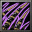

- 主要屬性 智慧
攻擊範圍 500
- 基礎護甲 5
基礎攻速 1.7
- 基礎攻擊 110 - 122
基礎跑速 300
甲斐國戰國大名武田信玄之妻，諏訪賴重之女，即武田勝賴之母。與丈夫晴信(當時武田信玄尚未出家，當時名為武田晴信)指揮強大武田軍，後因湖衣姬染上疾病過世，晴信在這段期間出家改名為信玄，一方面是哀痛湖衣姬的病故，一方面也想經由法體來體會佛心。
在指定區域釋放一道震波，對身處其中的敵人造成(100/200/300/400)傷害並且暈眩1秒；隨後該區域將會不斷冒出尖刺，對其上的敵人造成每秒(40/60/80/100)的傷害，尖刺持續5秒。
施展之後，將會增加自身(65/110/155/200)%的攻擊速度，並且每隔1秒隨機在周圍的一個敵人腳下釋放震波，震波可以造成(30/55/80/105)的傷害並且震暈0.3秒，總共可以釋放9道震波。
湖衣姬將可以使自己的身形與大地融為一體使敵人難以察覺，並且增加(2/4/6/8)護甲以及使自身的攻擊傷害增加(6/12/18/24)%。
技能等級越高身形越為透明，旦影子與武器法球效果仍存在不變。
-

-
T
大地魔爪
-
200/250/300
-
125/119/113
召喚大地魔爪打擊一個區域中的敵人，地爪的攻速極快，每次擊中可以造成最少152傷害，地爪持續(17/23/29)秒。
學習等級為6/12/18，傷害間隔0.1秒，冷卻時間隨技能等級提升降低。
永久性的提升(3/6/9/12)靈活、智慧和力量。